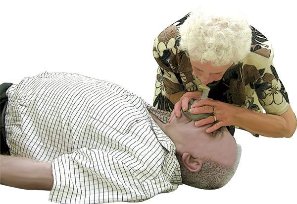
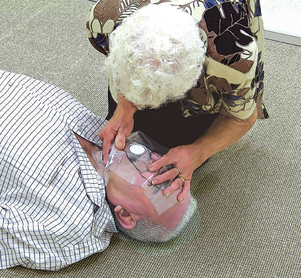

Rescue Breathing
On breathing in (inspiration), a person inspires approximately 21% oxygen, and the body uses between 4-5% of this amount for its normal functions. Therefore when a person breathes out (expiration) they expire approximately 16% of oxygen.
To breathe into another person as a means of supplementing their oxygen supply is essential for a non-breathing casualty. Immediate rescue breaths are necessary! If the brain is deprived of oxygen it begins to suffer irreversible tissue damage in 3-4 minutes.
Rescue breaths are necessary for casualties who are not breathing. Certain conditions cause the loss of breathing and the first aider should assess the need for resuscitation. Choking, heroin overdose, near drowning, certain bites and stings, as well as respiratory conditions such as asthma and emphysema can cause respiratory arrest necessitating rapid and effective rescue breaths to sustain life.
Rescue Breathing is the method by which a rescuer breathes for a casualty who is not breathing.
The common term is 'mouth-to-mouth resuscitation'. It is an effective method for buying time, as a rescuer breathes out sufficient oxygen to supply a casualty until more advanced help arrives.
There are five main methods of delivering rescue breaths:
Mouth-to-Mouth is where the rescuer seals the casualty's mouth with their own mouth, pinches the nose closed, and then blows air into the casualty's mouth.
Mouth-to-Nose is used where the casualty has sustained facial injuries that preclude using the mouth.
The rescuer closes the casualty's mouth, covers the nose with their mouth, breathes gently, and then releases the casualty's jaw to allow exhalation.
Mouth-to-Nose-&-Mouth is the preferred method when resuscitating an infant or young child, as the rescuer's mouth can cover and seal the nose and mouth.
Mouth-to-Stoma is used for resuscitating a casualty who breathes through a stoma, an opening in the neck, through which the casualty normally breathes. The rescuer breathes through the stoma directly into the airway while blocking the nose and mouth. Casualties who have a stoma often wear a scarf or fabric filter over the stoma. Be alert for the presence of a stoma under such wrappings.
Mouth-to-Mask is the most desirable method for rescue breaths as it lessens the risk of cross-infection and is more acceptable to many people than mouth-to-mouth. Masks come in various forms but they are used in a similar way.
The mask is fitted firmly over the casualty's nose and mouth and the rescuer delivers rescue breaths via the valve or tube thus avoiding direct contact with the casualty's mouth or expired air.
Rescue breaths must be effective, and are considered effective if the chest rises and falls with each breath given by the rescuer.
When considering which resuscitation technique to use, take account of the age of the casualty. The age groups are:
 Infant – Under 1 year
Infant – Under 1 year
 Child – Between 1 year and 8 years
Child – Between 1 year and 8 years
 Adult – 9 years and older
Adult – 9 years and older
If the rescuer believes the casualty to be a child treat as for a child.
Each breath should take 1 second. When breathing into a young child ensure that you modify the force of the breaths. If delivered too forcefully, the air will be directed into the stomach, which may cause the child to vomit, obstructing the airway.
The method used for infants is 'frog breathing' or 'puffing', where the rescuer fills his or her mouth with air and 'puffs' it into the infant's mouth. There will be adequate pressure and volume to satisfy their lung requirements, but not enough to impact on the stomach.
Indications for rescue breaths
 Unresponsive
Unresponsive
 No normal breathing, although there may be brief irregular, 'gasping' breaths
No normal breathing, although there may be brief irregular, 'gasping' breaths
Procedure for rescue breaths
 place your hand on the casualty's forehead and gently tilt the head back.
place your hand on the casualty's forehead and gently tilt the head back.
 place your fingertips under the point of the casualty's chin and lift the chin to open the airway.
place your fingertips under the point of the casualty's chin and lift the chin to open the airway.
 allow the mouth to open while maintaining chin lift
allow the mouth to open while maintaining chin lift
 take a normal breath to fill your lungs with oxygen, and place your lips around the casualty's mouth, making sure that you have a good seal
take a normal breath to fill your lungs with oxygen, and place your lips around the casualty's mouth, making sure that you have a good seal
 blow steadily into the casualty's mouth while watching for the chest to rise
blow steadily into the casualty's mouth while watching for the chest to rise
take about one second to make the chest rise
 maintaining head tilt and chin lift,take your mouth away from the casualty and watch for the chest to fall
maintaining head tilt and chin lift,take your mouth away from the casualty and watch for the chest to fall
 repeat the sequence as above, giving two effective breaths in total
repeat the sequence as above, giving two effective breaths in total
 stop to recheck the casualty only if they start breathing normally,otherwise do not interrupt resuscitation
stop to recheck the casualty only if they start breathing normally,otherwise do not interrupt resuscitation
Unsuccessful rescue breaths
If rescue breaths do not make the chest rise with each attempt, give 30 compressions and then before your next attempt at rescue breaths:
 check the casualty's mouth and remove any visible obstructions
check the casualty's mouth and remove any visible obstructions
 ensure that there is adequate head tilt and chin lift
ensure that there is adequate head tilt and chin lift
 DO NOT attempt more than two rescue breaths each time before returning to chest compressions
DO NOT attempt more than two rescue breaths each time before returning to chest compressions